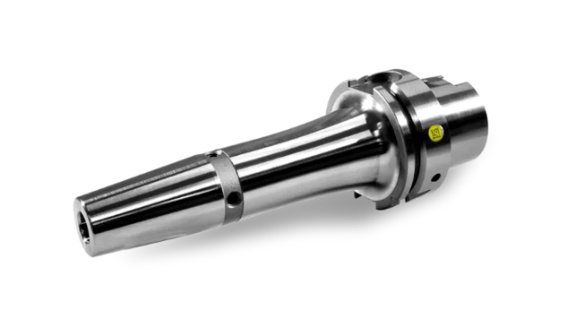
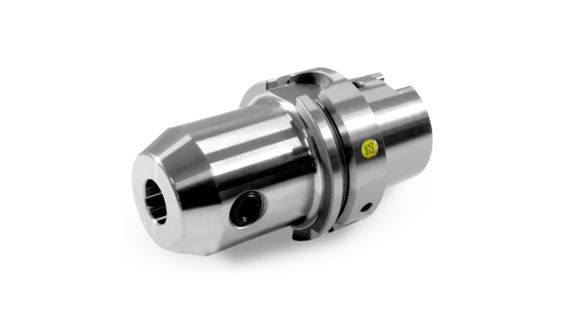
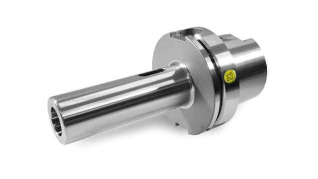
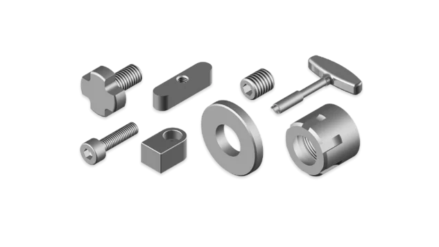
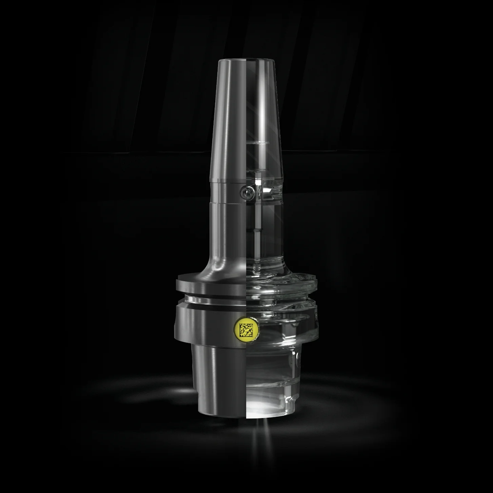

焼きばめホルダー
超硬またはHSS製のストレートシャンク工具の把握に。
詳しく見るホルダーの種類と機械のインターフェースを選択してください。ショップで寸法、在庫状況、価格とともに該当するホルダーがすべて表示されます。
ショップはZOLLERのカスタマーポータルMYZOLLER上で運営されています。価格はログイン後に表示されます。お客様番号をお持ちでない場合は、初回のご注文と同時にお客様アカウントを作成します。
ZOLLER Toolingのツールホルダーはすべて精密バランス調整済みで、常にDIN規格を上回ります。クリックするとショップでカテゴリーが開きます。

超硬またはHSS製のストレートシャンク工具の把握に。
詳しく見る
ERコレットでストレートシャンク工具を把握します。
詳しく見る
高能率加工向けHPC高精度ERコレットチャック。
詳しく見る
ウェルドンフラット付き工具用。内部給油なしの用途に最適です。
詳しく見る
傾斜したホイッスルノッチフラット付きストレートシャンク工具用。
詳しく見る
ねじ接続式のミーリングヘッド用。
詳しく見る
キー溝付きカッター用。切れ刃までクーラントを供給します。
詳しく見る
縦キー溝と横キー溝の両方を持つカッター用。
詳しく見る
DIN 2288準拠のタング付きモールステーパー工具用。
詳しく見る
ドリルやストレートシャンク工具の把握に。
詳しく見る
コレットチャックおよびHAWK EYE®用のERおよびER «Mini»。
詳しく見る
ストレートシャンク工具用。深い加工に必要な突出し長を確保します。
詳しく見る
シールディスク、クランプナットなど。
詳しく見る上の検索ツールまたはショップで直接、種類・インターフェース・把握径から絞り込めます。
お客様は個別の取引条件を確認し、請求書払いでご注文いただけます。購買部門と技術部門が同じチームで利用できます。
お客様番号やZOLLERの機器がなくても大丈夫です。チェックアウト時に会社情報をご入力いただければ、お客様アカウントを作成します。通常は同じ営業日内に完了します。
ご注文ごとにデジタルツインが付属し、ワンクリックでZOLLER TMSやCAMシステムに取り込めます。注文状況はMYZOLLERでリアルタイムに確認できます。

RFIDチップやZOLLER »idChip«などのデータキャリアを、ZOLLER Toolingの工具ホルダーに取り付けるためのものです。中空シャンクテーパーHSK-A、急テーパーSK、多角シャンクテーパーPSCには標準装備されています。
工具ホルダーを確実に識別し、製品寿命を最大限に延ばすためのものです。ご要望に応じて、チップが固定された状態でバランス調整済みの工具ホルダーを、お客様の製造現場へ直接お届けします。
チップ穴と工具ホルダーの嵌合部において、接着剤による形状嵌合を保証し、確実かつ強固な結合を実現します。
標準収縮チャックの事後微調整用。
シャフト全長にわたって工具が加圧されるため、最大の収縮力を保証します。
これにより、締め付け段における締め付けセグメントの最適な滑走と、スピンドル内の優れた締め付け力が保証されます。その結果、締め付け段における振れは最大10μm（DIN規格の5倍の精度）となります。
当社のツーリングソリューションは、3 µm未満の真円度を保証します。
ZOLLER Toolingのすべての工具ホルダーは精密バランス調整済みです（25,000 min⁻¹でG2.5、または最大残留不均衡量≤1 gmm）。これにより、加工時のスピンドル回転が安定し、ベアリングへの負担が軽減されます。その結果、スピンドルの寿命延長、最適なワーク表面仕上げ、および工具寿命の向上というメリットが得られます。
溝の位置が100%正確に中心に位置することを保証し、スピンドルへの完璧な嵌合と優れたトルク伝達を実現します。
工具交換時にHSK工具ホルダーが確実に外れることを保証します。
工具の刃先を完璧に冷却し、切りくずの流れを最適化し、刃先への切りくずの堆積を防ぎます。冷却剤用穴を斜めに配置することで、冷却剤が必要な場所、つまり工具の刃先に確実に到達します。これにより、最適な切削結果が得られ、工具の寿命を延ばすことができます。
RFIDチップやZOLLER »idChip«などのデータキャリアを、ZOLLER Toolingの工具ホルダーに取り付けるためのものです。中空シャンクテーパーHSK-A、急テーパーSK、多角シャンクテーパーPSCには標準装備されています。
工具ホルダーを確実に識別し、製品寿命を最大限に延ばすためのものです。ご要望に応じて、チップが固定された状態でバランス調整済みの工具ホルダーを、お客様の製造現場へ直接お届けします。
チップ穴と工具ホルダーの嵌合部において、接着剤による形状嵌合を保証し、確実かつ強固な結合を実現します。
標準収縮チャックの事後微調整用。
シャフト全長にわたって工具が加圧されるため、最大の収縮力を保証します。
これにより、締め付け段における締め付けセグメントの最適な滑走と、スピンドル内の優れた締め付け力が保証されます。その結果、締め付け段における振れは最大10μm（DIN規格の5倍の精度）となります。
当社のツーリングソリューションは、3 µm未満の真円度を保証します。
ZOLLER Toolingのすべての工具ホルダーは精密バランス調整済みです（25,000 min⁻¹でG2.5、または最大残留不均衡量≤1 gmm）。これにより、加工時のスピンドル回転が安定し、ベアリングへの負担が軽減されます。その結果、スピンドルの寿命延長、最適なワーク表面仕上げ、および工具寿命の向上というメリットが得られます。
溝の位置が100%正確に中心に位置することを保証し、スピンドルへの完璧な嵌合と優れたトルク伝達を実現します。
工具交換時にHSK工具ホルダーが確実に外れることを保証します。
工具の刃先を完璧に冷却し、切りくずの流れを最適化し、刃先への切りくずの堆積を防ぎます。冷却剤用穴を斜めに配置することで、冷却剤が必要な場所、つまり工具の刃先に確実に到達します。これにより、最適な切削結果が得られ、工具の寿命を延ばすことができます。
ご希望により、すべてのツールホルダーをバランス調整し»idChip«を接着した状態で生産現場へ直接お届けします。HSK-A、SK、PSCにはチップ穴が標準装備されています。
DataMatrixコードにより、プリセッター、»powerShrink«、工作機械のどこでも各ホルダーを一意に識別できます。ZOLLERでは測定、焼きばめ、バランス調整がホルダーに合わせて最適化されています。

はい。MYZOLLERでアカウントを作成し、チェックアウト時に会社情報をご入力ください。内容を確認のうえお客様アカウントを作成し（通常は同じ営業日内）、ご注文を自動的に手配します。ご注文は当社の注文確認をもって確定します。
ログイン後は定価が表示され、お客様は個別の取引条件が表示されます。価格はすべて税抜きです。
いいえ。ツールホルダーは対応するインターフェースを備えたあらゆる機械でお使いいただけます。ZOLLERのプリセッター、焼きばめ装置、バランス装置と組み合わせると、性能を最大限に引き出せます。
各ホルダーの形状データとマスターデータ一式です。ご注文時に受け取り、ワンクリックでZOLLER TMS Tool Management SolutionsやCAMシステムに取り込めます。
はい。HSK-A、SK、PSCにはチップ穴が標準装備されています。ショップで商品に、接着・バランス調整済みの»idChip«を追加するだけです。
MYZOLLERの「注文」で、注文確認、納期、配送追跡をリアルタイムでご確認いただけます。